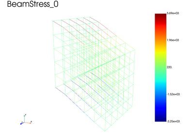
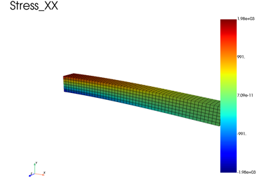
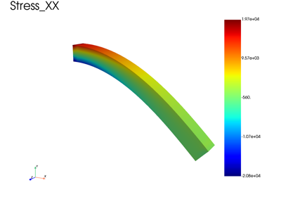
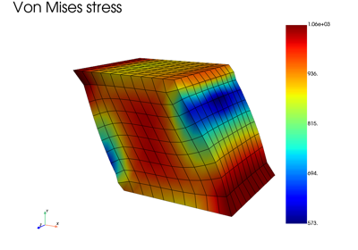

Examples
Below are examples illustrating fedoo’s main features. These examples are desgined to serve as tutorials. In that sense, an effort is made to keep the scripts simple and executable with a low computational cost. The meshes, tolerances and time increment used are coarse and the result obtained may not be accurate.
Simple examples to start
This section contains several very simple examples that illustrate the basics feature of fedoo, like how to create simple meshes, apply basics boundary conditions and get the results.

Beam Lattice Structure using beam model with geometric nonlinearities


Canteleaver Beam using 3D hexahedral elements

3D Canteleaver Beam with geometric nonlinearities

Visualization tutoral - Shear test of a cube
Apply constraints
This section illustrates on some examples the advanced constraints that can be applied in fedoo.


Advanced problems
This section show some advanced capabilities of fedoo.

Off-axis tensile test on a Gyroid unit cell with periodic boundary condition


Heterogeneous Material: Inclusion in a Matrix under Thermal Loading